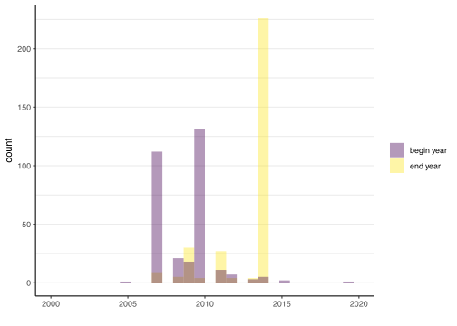
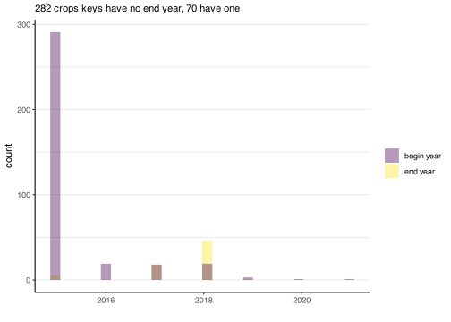

knitr::opts_chunk$set(message=F, warning=F, results=F, fig.align ="center", dev='svg')# Load the function filesource("functions.R")#included:#-function to save csv f_save_csv_files#-set the default scale_color and scale_fill to viridis theme#-loads the core tidyverse package# Load additional required librarieslibrary(DT) #for interactive tables#set theme for graphstheme_set(theme_classic() +theme(panel.grid.major.y =element_line(), #no vertical lines by default#text = element_text(family = "Times New Roman"), #default fontplot.title =element_text(face="bold"), #graphs titles in boldspanel.grid.minor.y =element_line(linewidth =0.5) ) )
RPG crop keys
Below you can see the list of crops, crops groups and catch and cover crops, with their associated keys. The documentation was downloaded and can be found here on géoservices site.
Code
#loading keys# Crops keyskeys_crops_all <-read_csv2("source/keys_crops/orginal_RPG_files/REF_CULTURES_2021.csv")keys_crops <-read_csv2("source/keys_crops/orginal_RPG_files/REF_CULTURES_2021.csv") %>%filter(CAMPAGNE_FIN>=2015|is.na(CAMPAGNE_FIN))n_crops_all <-nrow(keys_crops_all)n_crops <-nrow(keys_crops %>%filter(CAMPAGNE_FIN>=2015|is.na(CAMPAGNE_FIN)))# Crops main groups keyskeys_crops_groups <-read_csv2("source/keys_crops/orginal_RPG_files/REF_CULTURES_GROUPES_CULTURES_2021.csv")n_crops_groups_crops <-nrow(keys_crops_groups)n_crops_groups_groups <-nrow(keys_crops_groups %>%select(CODE_GROUPE_CULTURE) %>%distinct())# Catch and cover crop keyskeys_catch_cover_crops <-read_csv2("source/keys_crops/orginal_RPG_files/REF_CULTURES_DEROBEES_2021.csv")n_catch_cover_crops <-nrow(keys_catch_cover_crops)# Catch and cover crop groups keys (my attribution)keys_catch_cover_crops_groups <-read_csv2("source/keys_crops/keys_catch_crops_groups.csv")n_catch_cover_crops_groups <-nrow(keys_catch_cover_crops_groups %>%select(CODE_GROUPE_CULTURE_DEROBEE) %>%distinct())
Sous semis d’herbe ou de légumineuses * : Divers (28)
Féverolle : Protéagineux (8) (et non Fourrage (16))
Lin : Autres oléagineux (7) (et non Plantes à fibres (9))
Pois : Protéagineux (8) (et non Fourrage (16))
Lentille : Légumineuses à grains (15) (et non Fourrage (16))
X-Festulolium : Fourrage (16)
Lupin (blanc, bleu, jaune) : Protéagineux (8) (et non Fourrage (16))
Radis (fourrager, chinois) : Fourrage (16) (et non Légumes ou fleurs (25))
Understand crops and crops groups keys
here are the crops (all, including before 2015) not present in crops groups. Coherent, all end before 2015, justifies the choice to only select those before 2015.
celui seul en 2019 et sans fin : CNA Châtaigneraie non entretenue par des porcins
attention 2 qui se “finissent” en 1900 (début 2015) : BCC banane créole et CSC canne à sucre => changer date de fin en NA ?
Code
temp2 <-anti_join(keys_crops_all, keys_crops_groups, by=join_by(CODE == CODE_CULTURE))ggplot(temp2) +geom_histogram(aes(CAMPAGNE_FIN, fill="end year"), alpha=.4) +geom_histogram(aes(CAMPAGNE_DEBUT, fill="begin year"), alpha=.4) +xlim(2000, 2020) +labs(x="", fill="")

Among the crops included in crops groups,
Code
temp <-left_join(keys_crops_groups, keys_crops, by=join_by(CODE_CULTURE == CODE))#donc on se focus que sur celle des main crops groupsno_end <-nrow(temp %>%filter(is.na(CAMPAGNE_FIN)))end <-nrow(temp %>%filter(is.na(CAMPAGNE_FIN)==F))ggplot(temp) +geom_histogram(aes(CAMPAGNE_FIN, fill="end year"), alpha=.4) +geom_histogram(aes(CAMPAGNE_DEBUT, fill="begin year"), alpha=.4) +labs(x="", fill="",subtitle =paste(no_end, "crops keys have no end year,", end, "have one") )

Code
#so we focus on #Check if same crops names in the 2 filestemp2 <- temp %>%filter(LIBELLE_CULTURE.x != LIBELLE_CULTURE.y) %>%select(LIBELLE_CULTURE.x, LIBELLE_CULTURE.y)#OK, only minor difference (accent, uppercase, etc...)keys_crops_and_groups <- temp %>%select(-LIBELLE_CULTURE.y) %>%rename(LIBELLE_CULTURE = LIBELLE_CULTURE.x)rm(temp, temp2)
The first 4 columns are code and labels of crops (353 items) and crops groups (24 items) in RPG. We also indicate our ENglish label “our_label”. The last column is the fertilization label from “enquête pratiques culturales”. If they begin with a number from 01 to 18 (like in the graphs in the previous tab), that means the label directly corresponds to an item from the enquête pratiques culturales ; otherwise, there is not match, and we created a label.
Autre céréale d’hiver de genre Triticum adapté en 04-Triticale
Autre céréale de printemps de genre Triticum adapté en 04-Triticale
Autre céréale de printemps de genre Zea adapté en Maïs fourrage (il faudrait prnedre la moyenne avec grain et gérer l’exception où 1 des 2 absen)
Pois d’hiver Pois de printemps semé avant le 31/05 Pois de printemps semé tardivement (après le 31/05)
adaptés en 07-Pois protéagineux
ne pas oublier de mettre 0 à la jachère
Mélange de protéagineux (pois et/ou lupin et/ou féverole) prépondérants semés avant le 31/05 et de céréales Mélange de protéagineux (pois et/ou lupin et/ou féverole) Mélange de protéagineux semés tardivement (après le 31/05) Autre protéagineux d’un autre genre 07-Pois protéagineux + 15-Féverole
Pomme de terre de consommation Pomme de terre féculière
adaptés en 11-Pomme de terre (et non en Autres légumes ou fleurs)
10-Betterave sucrière : diviser par 2 car bisannuel (ou x 2) : se verra sûrement avec le % fertilisé